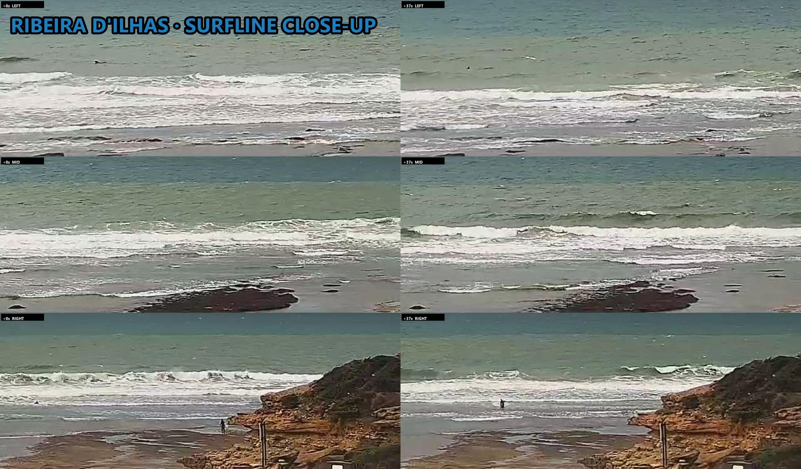
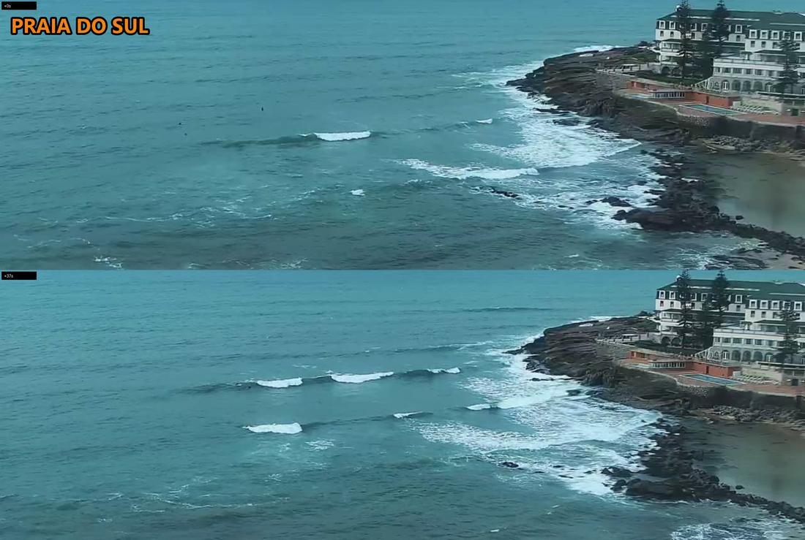
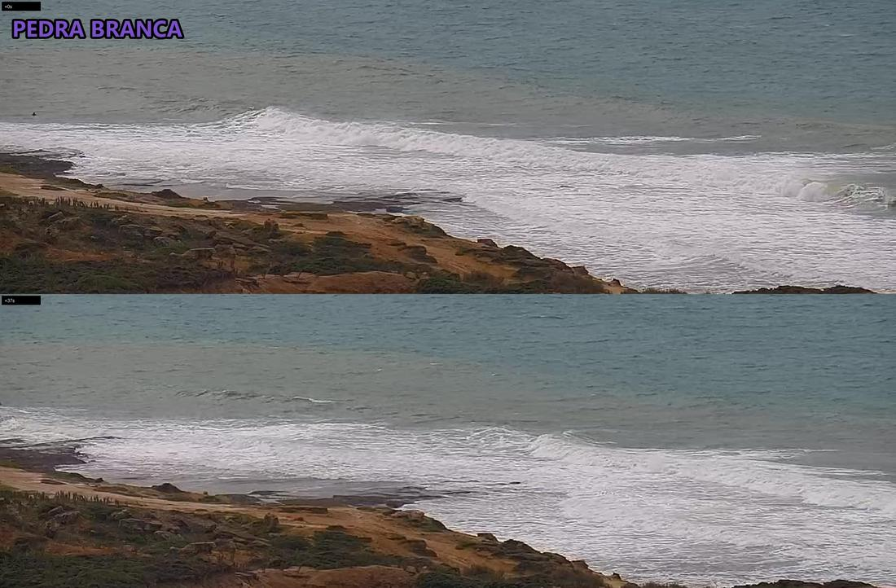
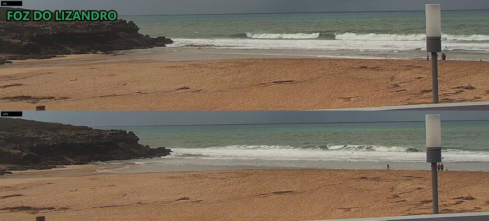

0.9–1.4m★★★👍 Worth surfing🏄 Busy
0.9–1.4m★★🤔 Marginal
liveoffline
| Ribeira | ★★★ | 0.9-1.4m | | bumpy, ridden | +1★ | 13+ busy |
|---|---|---|---|---|---|---|
| Norte | ★★ | 0.9-1.4m | | |||
| Sul | ★★★ | 0.9-1.4m | | small peaks | +1★ | 3+ normal |
| Pedra | ★★ | 0.9-1.4m | | messy whitewater | 1+ quiet | |
| Lizandro | ★★½ | 0.9-1.4m | | dumpy, inside | +½★ | 3+ normal |
| Ribeira | ★★★ | 0.9-1.4m | |
|---|---|---|---|
| Norte | ★★ | 0.9-1.4m | |
| Sul | ★★★ | 0.9-1.4m | |
| Pedra | ★★ | 0.9-1.4m | |
| Lizandro | ★★½ | 0.9-1.4m | |
| Ribeira | bumpy, ridden | +1★ | 13+ busy |
|---|---|---|---|
| Sul | small peaks | +1★ | 3+ normal |
| Pedra | messy whitewater | 1+ quiet | |
| Lizandro | dumpy, inside | +½★ | 3+ normal |
Wave size & rating: surf-forecast.com Ribeira >>
0.9–1.4m★★★👍 Worth surfing🏄 Busy
0.9–1.4m★★🤔 Marginal
0.9–1.4m★★★👍 Worth surfing🏄 Busy
0.9–1.4m★★🤔 Marginal
0.9–1.4m★★★👍 Worth surfing🏄 Busy
0.9–1.4m★★🤔 Marginal
0.9–1.4m★★🤔 Marginal
0.9–1.4m★★🤔 Marginal
0.9–1.4m★★★👍 Worth surfing🏄 Normal
0.9–1.4m★★🤔 Marginal
0.9–1.4m★★★👍 Worth surfing🏄 Normal
0.9–1.4m★★🤔 Marginal
0.9–1.4m★★🤔 Marginal🏄 Quiet
0.9–1.4m★★🤔 Marginal
0.9–1.4m★★🤔 Marginal🏄 Quiet
0.9–1.4m★★🤔 Marginal
0.9–1.4m★★forecast🤔 Marginal
0.9–1.4m★★½🤔 Marginal🏄 Normal
0.9–1.4m★★🤔 Marginal
0.9–1.4m★★½🤔 Marginal🏄 Normal
0.9–1.4m★★🤔 Marginal
0.9–1.4m★★½🤔 Marginal🏄 Normal
0.9–1.4m★★🤔 Marginal
1.2–1.5m★★forecast🤔 Marginal
1.2–1.5m★★forecast🤔 Marginal
0.9–1.4m★★★👍 Worth surfing🏄 Busy
13 surfers
bumpy onshore lines, one ridden on crowd crop; close-up L1 M0 R1 / L1 M0 R1, pack sits on detail crop ~13

0.9–1.4m★★★👍 Worth surfing🏄 Normal
3 surfers
small peaks breaking off the reef, onshore texture; 3 sitting out back on detail crop

0.9–1.4m★★🤔 Marginal🏄 Quiet
1 surfer
messy whitewater sweeping the reef; 1 out on crowd crop

0.9–1.4m★★½🤔 Marginal🏄 Normal
3 surfers
dumpy sections on the bar, surfers inside whitewater; ~3 approximate, surf school gone since 09:45

| When | Ribeira | Norte | Sul | Pedra | Lizandro |
|---|---|---|---|---|---|
| 2026-11-27 12:00lunch | POOR-TO-FAIR13 | POOR-TO-FAIR— | POOR-TO-FAIR3 | POOR-TO-FAIR1 | POOR-TO-FAIR3 |
| 2026-11-27 09:45morning | POOR-TO-FAIR7 | POOR-TO-FAIR— | POOR-TO-FAIR2 | POOR-TO-FAIR0 | POOR-TO-FAIR20 |
| 2026-11-27 07:30sunrise | POOR-TO-FAIR11 | FAIR— | FAIR2 | FAIR0 | FAIR2 |
| 2026-11-26 16:15dusk | POOR-TO-FAIR18 | POOR-TO-FAIR— | POOR-TO-FAIR0 | POOR-TO-FAIR10 | POOR-TO-FAIR6 |
| 2026-11-26 14:00afternoon | POOR-TO-FAIR15 | POOR-TO-FAIR— | POOR-TO-FAIR— | POOR-TO-FAIR4 | POOR-TO-FAIR1 |
| 2026-11-26 12:00lunch | POOR-TO-FAIR25 | POOR-TO-FAIR— | POOR-TO-FAIR0 | POOR-TO-FAIR1 | POOR-TO-FAIR4 |
| 2026-11-26 09:45morning | FAIR4 | POOR-TO-FAIR— | POOR-TO-FAIR1 | POOR-TO-FAIR0 | POOR-TO-FAIR0 |
| 2026-11-26 07:30sunrise | POOR-TO-FAIR4 | POOR-TO-FAIR— | POOR-TO-FAIR1 | POOR-TO-FAIR0 | POOR0 |